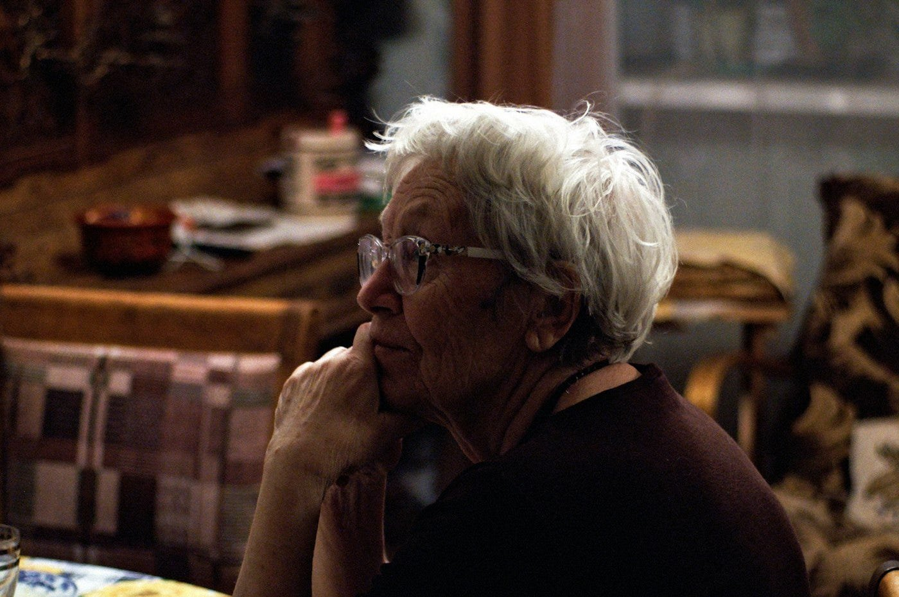
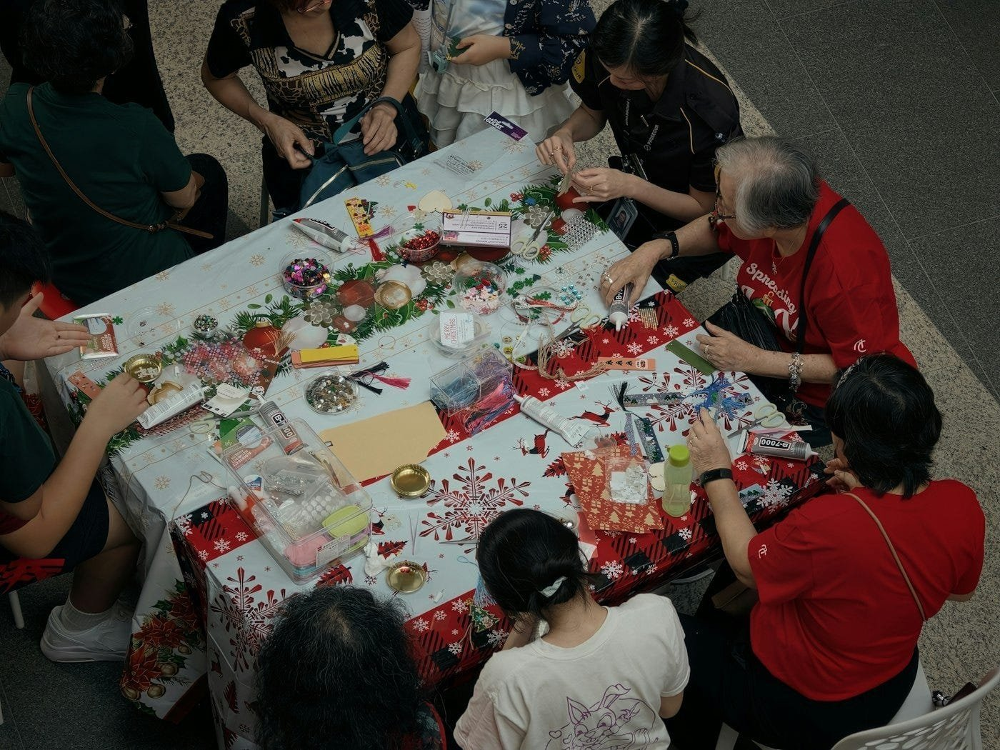
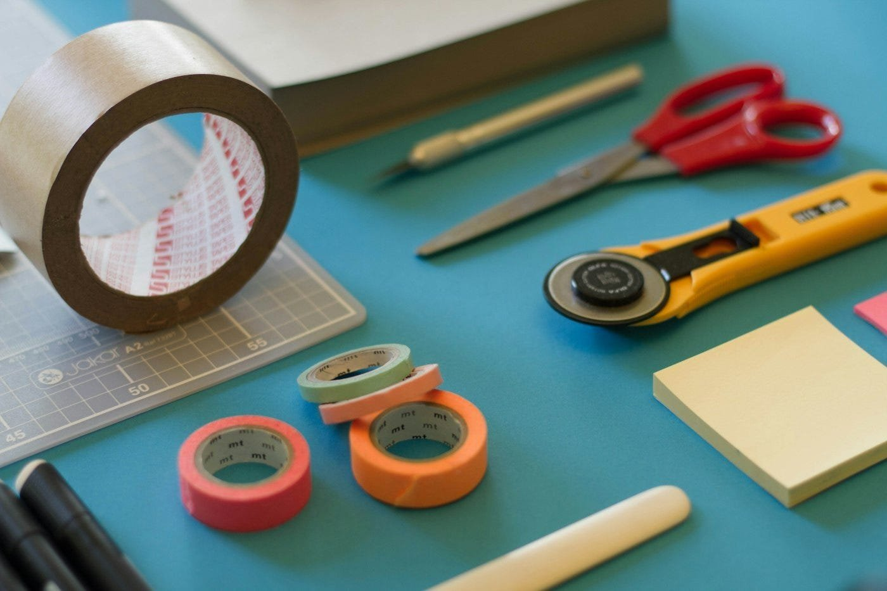
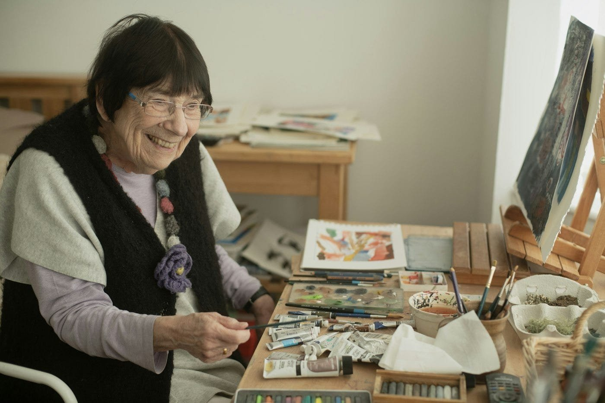
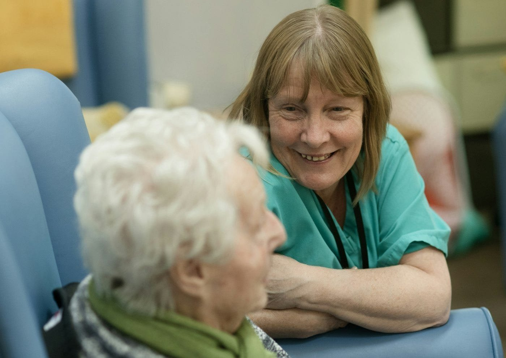
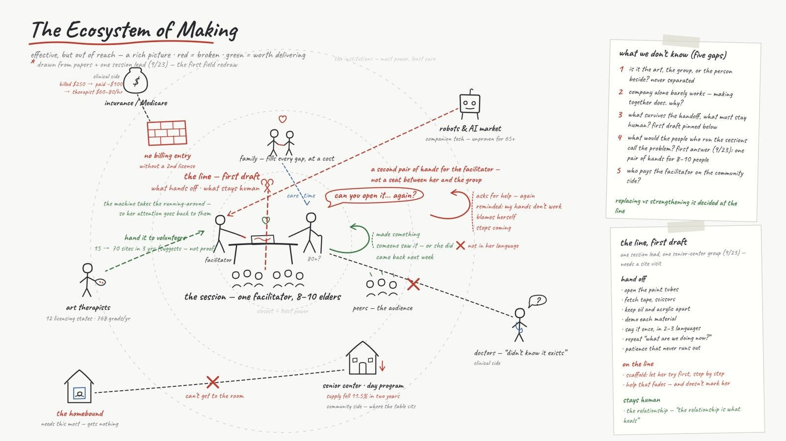
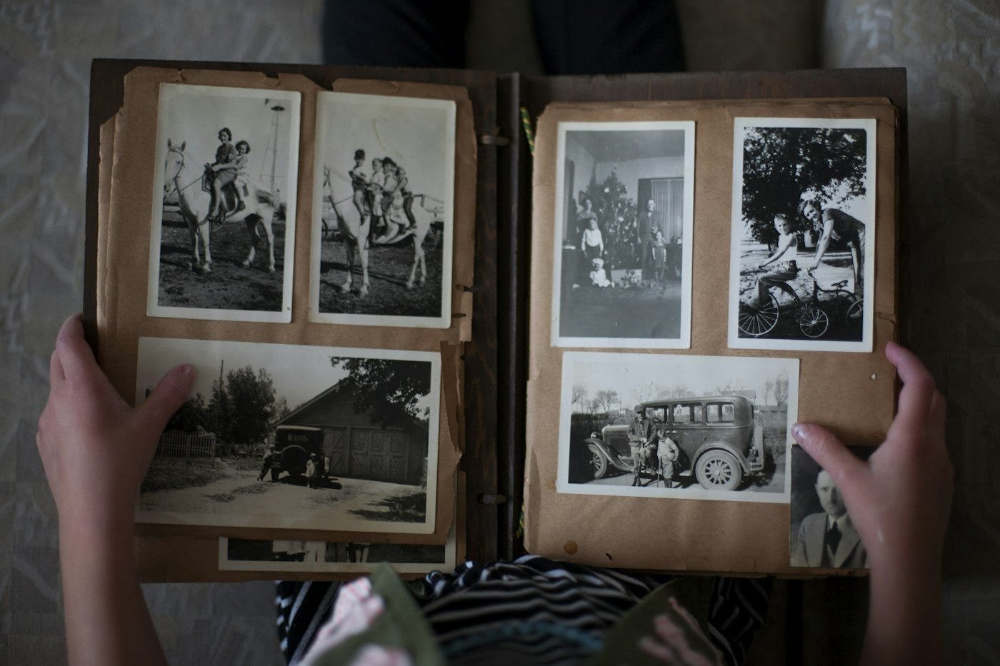
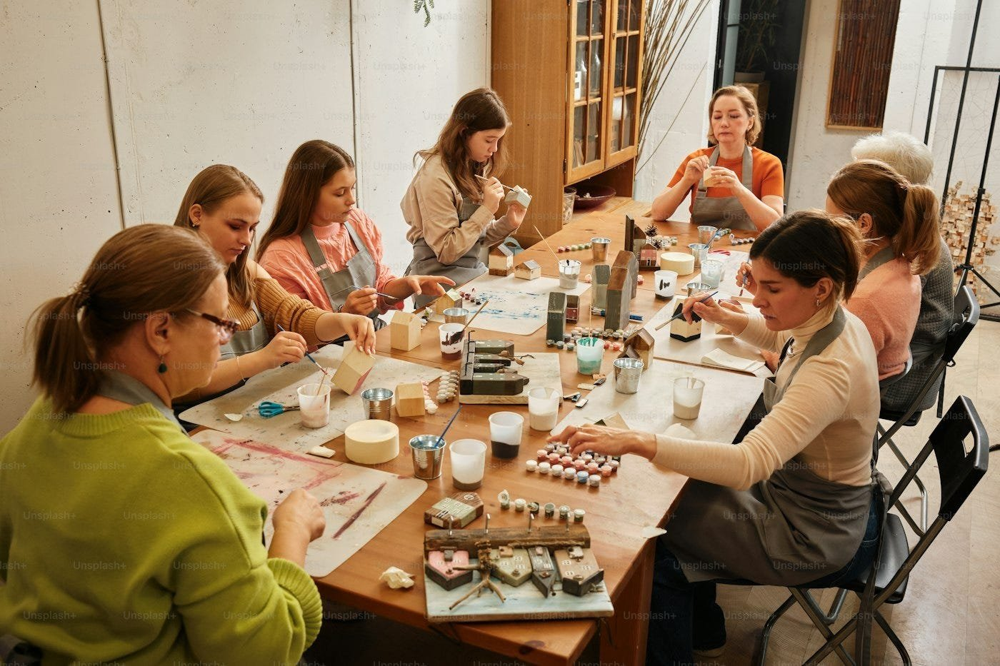

What a painting teacher in Chinatown told us
A weekly log from Studio Partnership II at SVA MFA Interaction Design, built around the Stanford Center on Longevity Design Challenge. Separate from my thesis posts.
Week four of Studio Partnership II. For three weeks everything we knew came from papers. Our problem statement, our map, the line between what a machine could take over and what has to stay human, all written by people who had never sat in one of these rooms. That bothered me more each week. So we went looking for someone who had.
She is a recent art therapy graduate who ran painting groups for older adults in Chinatown. She studied at SVA, which is how we found her. We talked for over an hour. The lines below are hers, with the filler taken out. I’m leaving her name out.
“They don’t want you to think they can’t even do this, so they’d rather not do it at all.”
We’d assumed the hard part was not being able to do something. She said no. The hard part is having to ask for help. Every time an elder asks someone to open a paint tube, they’re reminded their hands don’t work anymore. Some just stop coming. An assistant that waits to be called doesn’t fix that. It keeps the moment exactly as it is.
“My friends are leaving one by one. One day it’ll be my turn. I’m ready.”
A woman in her nineties said this to her over lunch. She had come from Japan decades ago, and by now most of the people she knew were gone. It isn’t the sentence that stays with me, it’s how plainly she said it. That is the room the facilitator walks into each week.

“They grieve their own bodies slipping away.”
Grieve was her word, not mine. Grief for the friends, and grief for the hands, the eyes, the memory. So this isn’t a class with a few slow students. It’s a room of people mourning something, who came in to make a picture anyway.
“Like looking after eight to ten kindergarteners at once.”
One facilitator, eight to ten elders. She isn’t short of hands. She’s short of attention. Tape, scissors, repeating instructions, all of it pulls her away from the person in front of her.

“The good thing about a robot is it never runs out of patience. It might make a great teaching assistant.”
She said this without us asking. It’s the sentence we’d been circling for a month, and I wrote it down twice. She was honest about the other side too: “With a really difficult participant, we lose patience too.”
“So many feelings can’t be put into words. Children and elders benefit even more, because language limits them more.”
People come to art because some things can’t be said. But her room runs in three languages, so the parts before and after the drawing, the instructions and the sharing, are where people get stuck.

“‘I actually finished this.’ Not because it’s beautiful. Because they finished it.”
That’s her measure of success, and now it’s ours. Not the picture. How much of it the person did on their own. “Let them try first, step by step, and only then give the solution.”

“Your creativity is, in a way, your life force.”
She went bigger than I expected here, and I think she meant it literally. The painting is proof the person is still here, still making something. And they get to see the proof.
“Therapy works because the relationship heals, not because of how clever the theory is.”
I asked whether any of this could be replaced. This was her answer, and it’s where our line goes. The relationship is not ours to touch. On AI: “AI is a people-pleaser. There’s no person there, and it rarely makes mistakes.” On her own work: “It heals because I actually draw, I actually touch.”

“They think I’m a painting teacher. They don’t know what art therapy is, and that’s fine.”
The elders don’t want the label. Neither does she. Whatever we build won’t be called therapy either.
What it did to our thinking. We redrew the map, another post for that. The bigger change was where the robot points. It used to point at the table, between people. Now it points at the facilitator, to hand her attention back. And it settled something for me. Aging is a fact. Needing help is a fact. The question is how to help without taking dignity in exchange. Help you have to ask for costs something. Help that is simply there doesn’t.

“I actually finished this” is the line I keep hearing. In week one I wrote about my grandmother, who left almost nothing behind. Hardly any photographs, no writing, no drawings, only what I remember. If this project lets one older person do one more thing, I want it to be this: keep their memories and their feelings in a form they made themselves, and leave it to someone. A trace that they were here.

Next: more practitioners, and a seat in a real session, to watch where the facilitator’s hands actually go.
